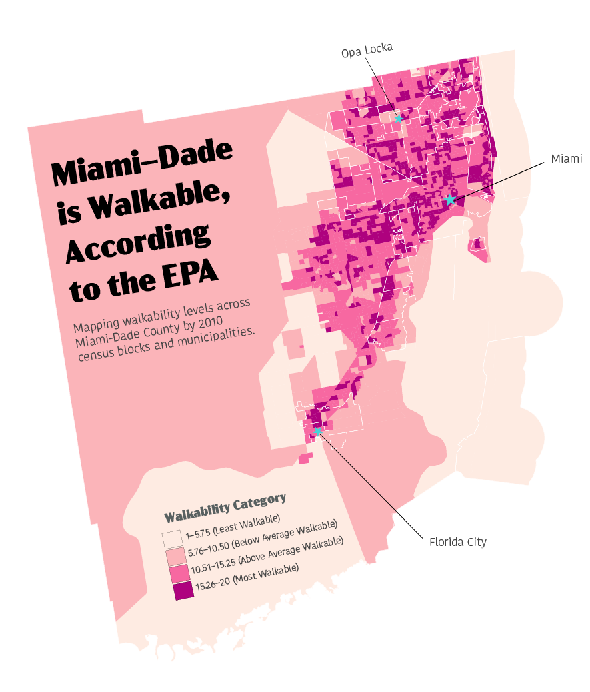
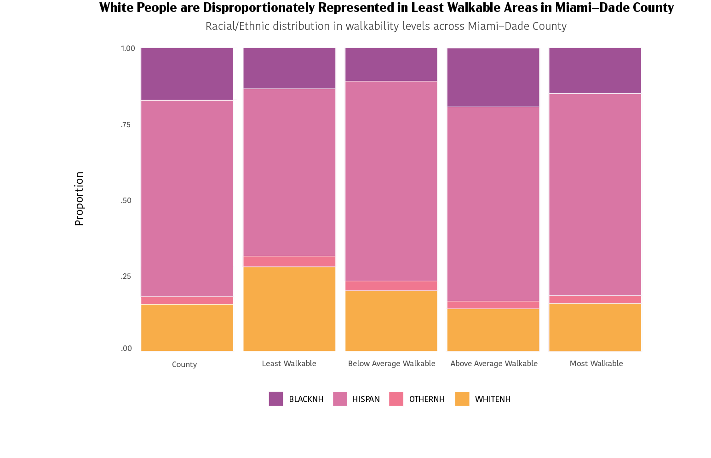
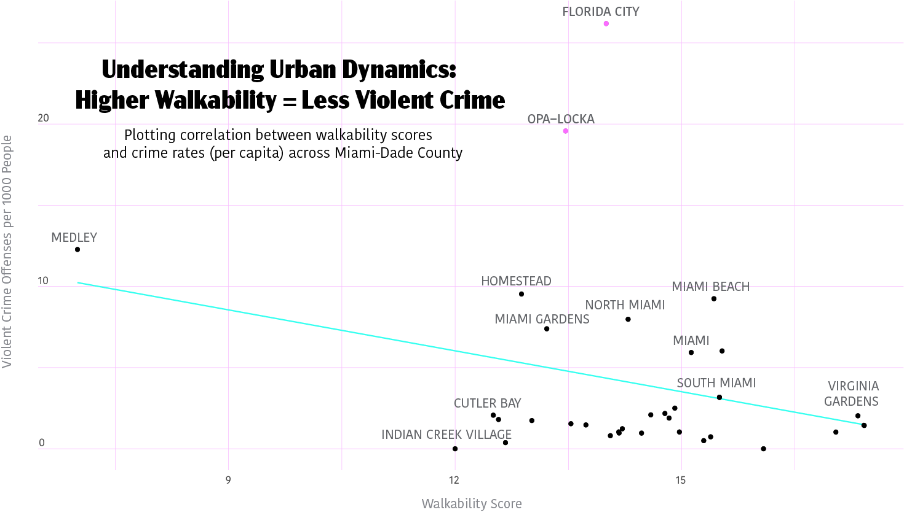

Commuting options for a 21-year-old who still can’t drive (a.k.a me) are kind of limited:
I was born and raised in Hialeah, a city located in Miami-Dade County. As a longtime resident of South Florida, I think most locals would agree that Miami-Dade is very car-dependent.
Miami does have several forms of public transportation: A public bus system, the Metrorail, the Metromover, the Tri-rail, and the Brightline. Although the county boasted a ridership figure of 77,514,395 in the 2023 fiscal year, the city’s public transportation system has several shortcomings. For instance, the railways are not extensive and only cover specific areas within the city, particularly as you approach downtown Miami. Although the city bus is the most utilized mode of public transportation, it is inefficient and considerably time-consuming for residents to navigate.

My fondness for public transportation and Miami's lack of quality and efficiency in its systems have always piqued my curiosity about how the city was designed. My objective for this project is to determine whether Miami-Dade is a walkable city according to the National Walkability Index.
The National Walkability Index is a nationwide geographic data resource compiled by the Environmental Protection Agency (EPA) that ranks block groups according to their relative walkability. The national dataset includes walkability scores for all block groups as well as the underlying attributes that are used to rank the block groups. Some important factors that are measured include intersection density, proximity to transit stops, and employment mix, among others.
For this analysis, I will examine the 2021 version of the Walkability Index, which utilizes block group boundary definitions from the 2010 Census, categorized by municipality. With this data, I will create a map that allows us to analyze walkability scores across Miami-Dade County.
Well, that's surprising!
For anyone wondering, the sections that are least walkable include parts of the Everglades, Biscayne National Park, and Cypress Wildlife Management Area - all are protected ecosystems that are (likely) uninhabited by humans.
Let’s take a closer look into the demographics of Miami-Dade's various neighborhoods, examining how their walkability levels correlate with resident profiles.
As highlighted by the data, it's counterintuitive to see white people disproportionately represented in the least walkable areas. One might assume that areas with lower walkability would be poorer, thus having a higher proportion of residents who are people of color. However, the data shows that this isn't the case across Miami-Dade County. Let's see why:
The 3 lowest walkability scores across Miami-Dade belong to:
Scroll to see!
Medley is known for its industrial and commercial areas. Its lower walkability score may be attributed to its primarily industrial character, with a focus on warehouses, distribution centers, and manufacturing facilities. These types of areas typically prioritize vehicular traffic due to the heavy movement of goods and materials. In 2021, there were 5.52 times more White (Hispanic) residents (779 people) in Medley, FL than any other race or ethnicity.
On the other hand, the areas of Indian Creek Village and Cutler Bay are more affluent, with many neighborhoods featuring waterfront access and canal networks, making them perfect places to own boats. While these amenities enhance the appeal of these areas, they also shape infrastructure that prioritizes vehicular traffic over pedestrian needs. Additionally, these neighborhoods tend to have predominantly white populations, reflecting historical patterns of residential segregation and socioeconomic disparities.
I was genuinely surprised by the level of walkability in Miami-Dade County, especially given that many residents might avoid certain areas due to inefficiency or concerns about safety and crime. This prompted me to question the accuracy of the EPA’s Walkability Index in defining what truly constitutes a "walkable" environment. This leads me to my next question:
I aimed to analyze how crime rates varied across different levels of walkability in Miami-Dade County, with a specific focus on Opa-Locka, a neighborhood often perceived by residents as "dangerous" or "the hood." Given the prevalence of these perceptions, I sought to investigate whether they were grounded in reality or influenced by biases, particularly concerning the predominantly black population in the area. My objective was to explore the relationship between walkability and crime rates and assess the validity of these claims about Opa-Locka. To accomplish this, I utilized crime data from the FBI’s Uniform Crime Reporting Program for 2019 and integrated it with the Walkability Index for analysis.
As it turns out… Opa-Locka is just an outlier!
Across Miami-Dade, we observe a notable trend: areas with higher walkability tend to have lower crime rates per capita. However, there are exceptions, such as Florida City. Despite being characterized as one of the most dangerous cities in the state facing challenges like a high poverty rate (according to 2021 Census Data), Florida City does not conform to the expected pattern. Similarly, Opa-Locka, which ranks as the second most dangerous city in the state, challenges the overall trend we observed. These findings underscore the complex interplay of factors influencing crime rates beyond walkability alone.
Now that we've established how walkable Miami-Dade County is, how does it compare to the rest of the country?
Ranking 20th on the list, Miami-Dade is one of the most walkable cities in the country. Surprisingly, the highest walkability scores do not all belong to popular urban hubs like New York City or Chicago, but instead to counties consisting of relatively smaller yet walkable towns.
Overall, the United States isn’t walkable. This is because big cities only make up a small percentage of the country. The majority of the United States comprises of small towns and rural areas, contributing to the average score of 6.508.

Urban areas often benefit from compact layouts, mixed land use, and well-connected transportation networks, which contribute to higher walkability scores. On the other hand, rural areas may face challenges such as greater distances between destinations, limited infrastructure for pedestrians, and reliance on personal vehicles for transportation.
However, it's important to note that walkability is not exclusive to urban environments. Rural communities can also prioritize pedestrian-friendly design elements such as sidewalks, crosswalks, and pedestrian pathways. Additionally, rural areas may offer unique opportunities for walking, such as scenic trails, parks, and natural landscapes. Ultimately, the diversity of high walkability scores across urban and rural areas highlights the importance of tailored approaches to community planning and design. By considering the unique characteristics and needs of each locality, policymakers and planners can create environments that promote walking and enhance overall quality of life, regardless of whether they are urban or rural in nature.
While it's heartening to discover that Miami-Dade ranks among the most walkable in the nation, it's also sobering to confront the disparities that persist within our own neighborhoods. Understanding the challenges faced by communities like Opa-Locka underscores the urgent need for action to improve walkability and safety, while also challenging stereotypes. While Opa-Locka may have some walkable areas, it's crucial to address safety concerns to ensure that it is a safe environment for everyone to walk in.

Moreover, Miami-Dade should prioritize building a better public transportation system to complement walkability. Despite the walkable nature of the area, the current transportation system may not be efficient, especially for longer distances or for those unable to walk. Enhancing public transportation options will provide essential mobility alternatives and further promote accessibility and inclusivity within the community.
This calls for community-driven initiatives, targeted interventions, and collaborative efforts aimed at addressing the underlying issues contributing to these disparities. By investing in infrastructure improvements, enhancing public safety measures, and fostering community engagement, we can create more inclusive and accessible environments that prioritize the well-being of all residents. This involves advocating for equitable urban planning policies, supporting local grassroots organizations, and amplifying the voices of marginalized communities to ensure that their needs are heard and addressed. Together, we can work towards building a healthier, safer, and more walkable community for everyone.